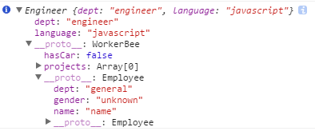

闭包
//拿到本不该属于你的东西，容易造成内存泄漏
function a() {
console.info("a");
var i = 0;
function b() {
console.info("b");
console.info(++i);
}
return b;
}
var c = a();
这段代码有两个特点：
1、函数b嵌套在函数a内部；
2、函数a返回函数b。 这样在执行完var c=a()后，变量c实际上是指向了函数b，再执行c()后就会弹出一个窗口显示i的值(第一次为1)这段代码其实就创建了一个闭包，为什么？
因为函数a外的变量c引用了函数a内的函数b，就是说：当函数a的内部函数b被函数a外的一个变量引用的时候，就创建了一个闭包。
闭包的应用场景
1、保护函数内的变量安全。以最开始的例子为例，函数a中i只有函数b才能访问，而无法通过其他途径访问到，因此保护了i的安全性。
2、在内存中维持一个变量。依然如前例，由于闭包，函数a中i的一直存在于内存中，因此每次执行c()，都会给i自加1。
以上两点是闭包最基本的应用场景，很多经典案例都源于此。
理解闭包的关键
这种即使离开函数作用域的情况下仍然能够通过引用调用内部函数的事实，意味着只要存在调用内部函数的可能，JavaScript就需要保留被引用的函数。而且JavaScript运行时需要跟踪引用这个内部函数的所有变量，直到最后一个变量废弃，JavaScript的垃圾收集器才能释放相应的内存空间。
更详细的内容请参考
闭包究竟是什么
作用域
//js是函数基本作用域，在内部的变量，内部都能访问，外部不能访问内部的，内部能访问外部的
function test(){
if(false){
var i = 10;
}
console.log(i);
}
test();//undefined
多重prototype链
// 多重prototype链的例子
function Employee(name) {
this.name = "name";
this.dept = "general";
this.gender = "unknown";
}
function WorkerBee() {
this.projects = [];
this.hasCar = false;
}
function Engineer() {
this.dept = "engineer";//覆盖了 "父对象"
this.language = "javascript";
}
WorkerBee.prototype = new Employee;// 第一层prototype链
console.info(WorkerBee);
Engineer.prototype = new WorkerBee;// 第二层prototype链
console.info(Engineer);
var jay = new Engineer("Jay");
console.info(jay);
console.info("dept ", jay.dept);//engineer, 找到的是自己的属性
console.info("hasCar ", jay.hasCar);// false, 搜索到的是自己上一层的属性
console.info("gender ", jay.gender);// unknown, 搜索到的是自己上二层的属性
看得到的jay对象如下

有趣的ECMAScript
slice()
var phoneid = "id=235689147jjj";
console.log(phoneid.slice("3"));//235689147jjj 从第三个开始到最后
console.log(phoneid.slice("3", "-1"));//235689147jj 从第三个开始，到倒数第二个（后面的-1.相当于phoneid总长度与-1之和）
console.log(phoneid.substring("3"));//235689147jjj 从第三个开始到最后
console.log(phoneid.substring("3", "0"));//id= 从第一个到第三个
console.log(phoneid.substring("3", "-1"));//id= 从第一个到第三个，后面的-1.会自动变为0，而且substring始终把小的数字放前面
差不多parseInt()
var n1 = "12";
console.log(typeof n1);//string 原来n1为字符串
n1 = + n1;
console.log(typeof n1);//number 使用了后变为数字了，相当于parseInt()
console.log(n1);//12
n1 = - n1;
console.log(n1);//-12 还可以把数字变为负数
n2 = 1 + n1;
console.log(n2);//-11 直接与数字计算
lastIndexOf()
var t1 = "hellosdfsdfsfo";
console.log(t1.indexOf("o"));//4 从前往后数
console.log(t1.lastIndexOf("o"));//13 从后往前数
ECMAScript 标签语句
var iNum = 0;
outermost:
for (var i = 0; i < 10; i++) {
for (var j = 0; j < 10; j++) {
if (i == 5 && j == 5) {
// continue outermost;//95 i和j都为5时候，跳出这个for到标签outermost，位置，继续执行for循环
break outermost; //55 i和j都为5时候，跳出到标签outermost，位置，且直接退出
}
iNum++;
}
}
console.log(iNum);
arguments[0], 获取未知个数的参数
//无需明确命名参数,可以接受任意个数的参数（根据 Netscape 的文档，最多可接受 255 个）
function fcname(){
console.info(arguments.length);
console.info(arguments[0],arguments[1],arguments[2]);
}
fcname(13,34,89,44,35,67);
原型和构造函数的问题
function Car(sColor,iDoors,iMpg) {
this.color = sColor;
this.doors = iDoors;
this.mpg = iMpg;
this.showColor = function() {
alert(this.color);
};
}
var oCar1 = new Car("red",4,23);
var oCar2 = new Car("blue",3,25);
//注释: 上面的例子中，是通过构造函数来穿甲showCar熟悉，每次调用函数 createCar()，都要创建新函数 showColor()，意味着每个对象都有自己的 showColor() 版本。而事实上，每个对象都共享同一个函数。
所以，我们引入原型链的概念
//但是原型链也有问题，如：给一个初始化的实例赋值，会影响另一个实例的内容
function Car(color) {
console.info("init Car");
this.color = color;
Car.prototype.doors = 4;
Car.prototype.mpg = 25;
Car.prototype.showColor = function() {
console.info("showCar ",this.color);
};
}
var oCar2 = new Car();
var oCar1 = new Car("blue");
console.info(oCar1.showColor());//输出 "showCar blue"
console.info(oCar2.showColor());//输出 "showCar blue"
//所以，我们结合原型链和构造函数，以下是构造函数与原型链结合起来使用，正常
function Car(sColor,iDoors,iMpg) {
this.color = sColor;
this.doors = iDoors;
this.mpg = iMpg;
this.drivers = new Array("Mike","John");
}
Car.prototype.showColor = function() {
console.info(this.color);
};
var oCar1 = new Car("red",4,23);
var oCar2 = new Car("blue",3,25);
oCar1.drivers.push("Bill");
console.info(oCar1.drivers);//输出 "Mike,John,Bill"
console.info(oCar2.drivers);//输出 "Mike,John"
Flux
Flux是什么，和React区别
1. Flux不是一个具体的框架，而是facebook提出的一种代码架构
2. React只是一个视图库，Flux是咋React的基础上对前端整体的组织方案
3. 传统的MVC只适用与中小型的系统，对大规模系统来说MVC复杂度过高
4. Flux的目的是保证逻辑清晰，数据流向清晰，依赖关系清晰
操作DOM元素
可以实时刷新dom内容，也可以获取dom后整体刷新
//通过this.getDOMNode()获取当前dom，并修改
console.info("_save "+this.getDOMNode().value);
this.props.onSave(this.getDOMNode().value);
this.getDOMNode().value = "";
-------------------------------------奇怪的分割线-------------------------------------------
//通过修改state来实时刷新
onBlur={this._save}
onChange={this._onChange}//绑定onchange事件
value={this.state.value}//更新当前的值
//一旦change就setState，当keyDown就刷新state的value，一旦onBlur失去焦点，就保存当前是数据
_save: function() {
this.props.onSave(this.state.value);
this.setState({
value: ''
});
},
_onChange: function(/*object*/ event) {
this.setState({
value: event.target.value
});
},
_onKeyDown: function(event) {
if (event.keyCode === ENTER_KEY_CODE) {
this._save();
}
-------------------------------------奇怪的分割线-------------------------------------------
//或者通过refs来获取虚拟dom，input中添加ref属性,然后通过this.refs.input.getDOMNode()来获取此属性
< input
className={this.props.className}
id={this.props.id}
placeholder={this.props.placeholder}
onBlur={this._save}
ref="inputs"
// onChange={this._onChange}
onKeyDown={this._onKeyDown}
// value={this.state.value}
autoFocus={true}
/>
var str = this.refs.input.getDOMNode().value;